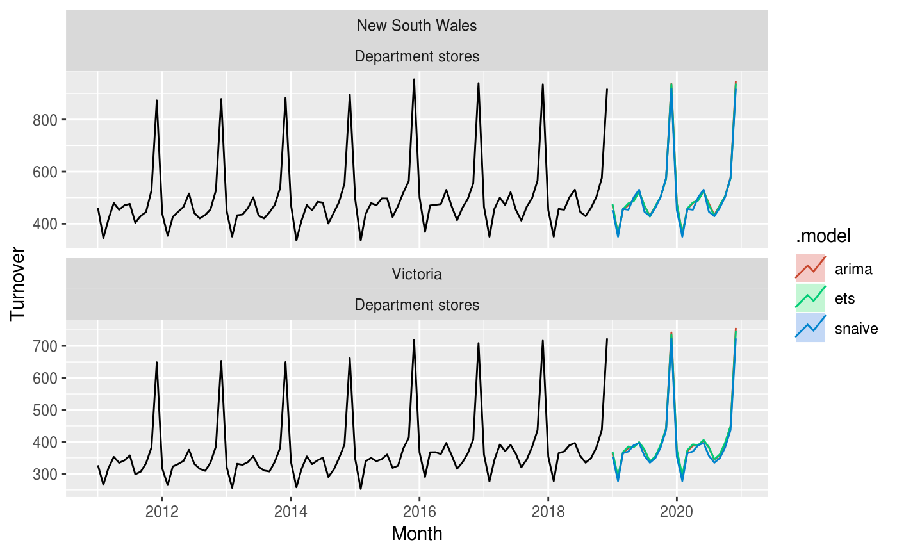

The R package fable provides a collection of commonly used univariate and multivariate time series forecasting models including exponential smoothing via state space models and automatic ARIMA modelling. These models work within the fable framework, which provides the tools to evaluate, visualise, and combine models in a workflow consistent with the tidyverse.
Installation
The v0.1.0 pre-release can be installed using:
You can install the development version from GitHub
Installing this software requires a compiler
Example
library(fable)
library(tsibble)
library(tsibbledata)
library(lubridate)
library(dplyr)
aus_retail %>%
filter(
State %in% c("New South Wales", "Victoria"),
Industry == "Department stores"
) %>%
model(
ets = ETS(box_cox(Turnover, 0.3)),
arima = ARIMA(log(Turnover)),
snaive = SNAIVE(Turnover)
) %>%
forecast(h = "2 years") %>%
autoplot(filter(aus_retail, year(Month) > 2010), level = NULL)
Learning to forecast with fable
- The pkgdown site describes all models provided by fable, and how they are used: http://fable.tidyverts.org/
- The forecasting principles and practices online textbook provides an introduction to time series forecasting using fable: https://otexts.com/fpp3/ (WIP)
- A quick start functionality guide can be found here: https://tidyverts.github.io/tidy-forecasting-principles/ (WIP)
Getting help
Questions about forecasting can be asked on Cross Validated.
Common questions about the fable package are often found on Stack Overflow. You can use this to ask for help if the question isn’t already answered. A minimally reproducible example that describes your issue is the best way to ask for help!